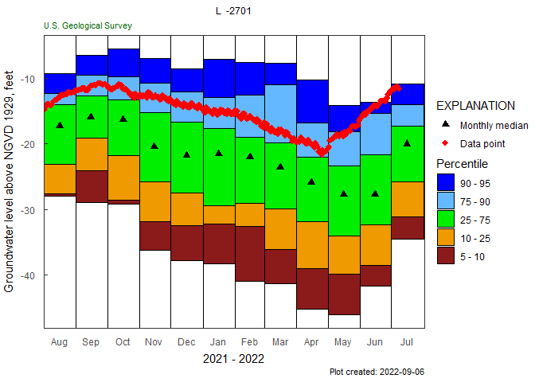
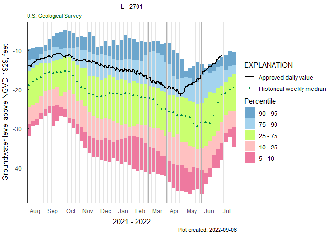
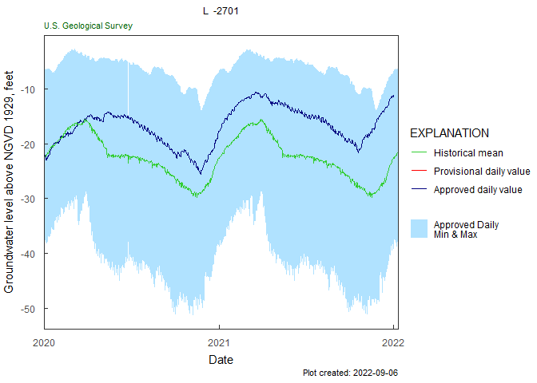
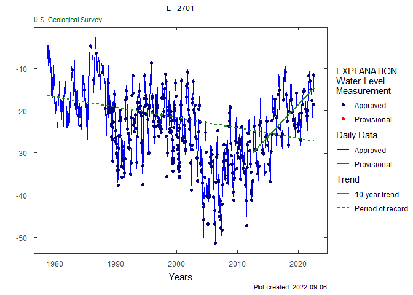
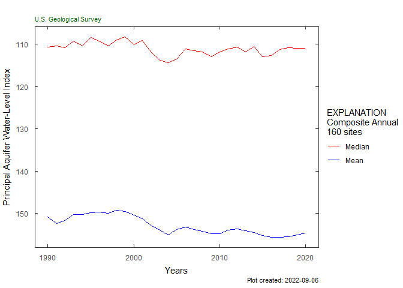
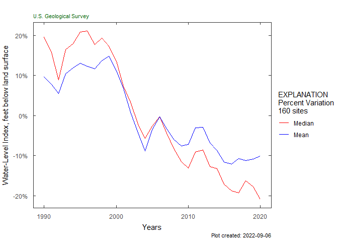

Hydrologic AnalySis Package
Inspiration: https://fl.water.usgs.gov/mapper/
See https://usgs-r.github.io/HASP/ for more information!
Sample workflow
Single site workflows:
library(HASP)
library(dataRetrieval)
site <- "263819081585801"
#Field GWL data:
gwl_data <- dataRetrieval::readNWISgwl(site)
# Daily data:
parameterCd <- "62610"
statCd <- "00001"
dv <- dataRetrieval::readNWISdv(site,
parameterCd,
statCd = statCd)
# Water Quality data:
parameterCd <- c("00095","90095","00940","99220")
qw_data <- dataRetrieval::readWQPqw(paste0("USGS-", site),
parameterCd)
y_axis_label <- dataRetrieval::readNWISpCode("62610")$parameter_nm
monthly_frequency_plot(dv,
parameter_cd = "62610",
plot_title = "L2701_example_data",
y_axis_label = y_axis_label)
gwl_plot_all(gw_level_dv = dv,
gwl_data = gwl_data,
parameter_cd = "62610",
plot_title = "L2701_example_data",
add_trend = TRUE, flip_y = FALSE)
Sc_Cl_plot(qw_data, "L2701_example_data")
trend_plot(qw_data, plot_title = "L2701_example_data")
Composite workflows:
#included sample data:
aquifer_data <- aquifer_data
num_years <- 30
plot_composite_data(aquifer_data, num_years)
plot_normalized_data(aquifer_data, num_years)

Installation of R and RStudio
To use the HASP package, you will need to have R and RStudio installed on your computer. This installation will only need to be done once for each computer. This link has instructions for installing R and RStudio:
R and RStudio Installation Instructions
Useful links:
Installation of HASP
You can install the HASP package using the remotes package.
To install the remotes package, copy the following line into R or the “Console” window in RStudio:
install.packages("remotes")To install the HASP package:
remotes::install_github("USGS-R/HASP")During this installation, you may be prompted to update or install some packages. You can press 1 to update all packages.
Running the apps
HASP includes two interactive applications as a way to explore the functionality of this package. One has functions for exploring data from a single site, and the other has functions for exploring data from an aquifer.
To run the single site application, use the following code:
HASP::explore_site()To run the aquifer application use the following code:
HASP::explore_aquifers()Disclaimer
This software is preliminary or provisional and is subject to revision. It is being provided to meet the need for timely best science. The software has not received final approval by the U.S. Geological Survey (USGS). No warranty, expressed or implied, is made by the USGS or the U.S. Government as to the functionality of the software and related material nor shall the fact of release constitute any such warranty. The software is provided on the condition that neither the USGS nor the U.S. Government shall be held liable for any damages resulting from the authorized or unauthorized use of the software.